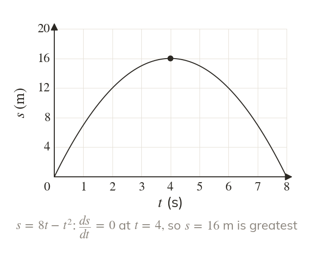
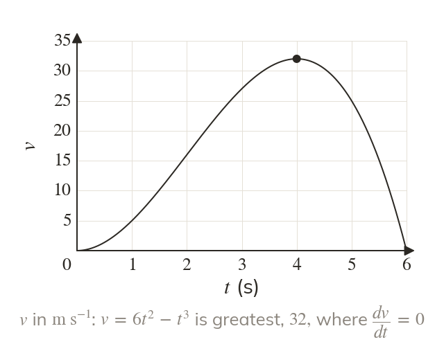
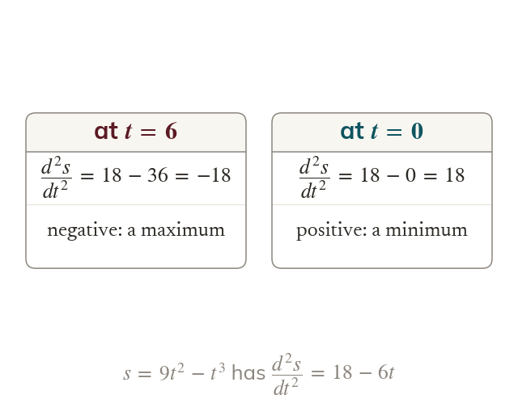
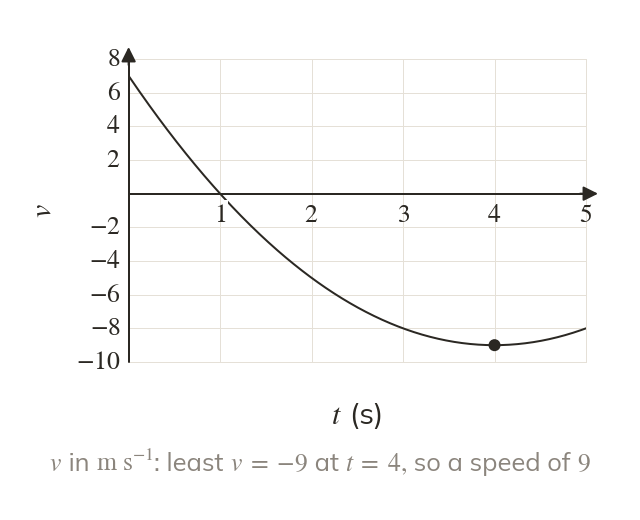
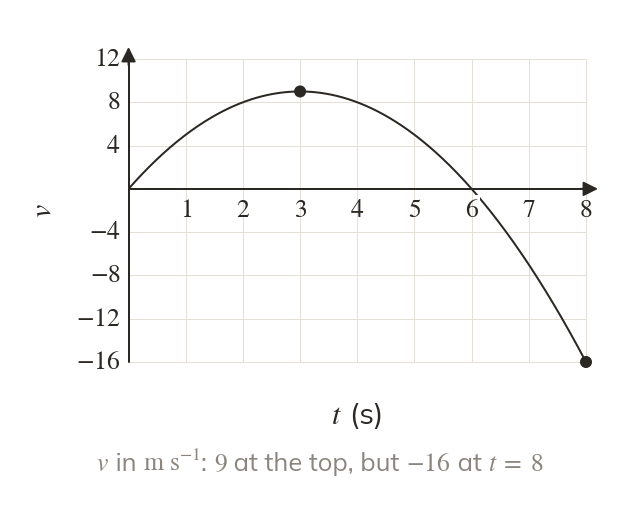

The top of the displacement graph
The displacement is greatest where the graph turns, so where
That is the moment the body is at rest.
The greatest height of a ball, the top speed of a car and the furthest a particle gets from are all stationary values, found by setting a derivative to zero. Justifying that a value is the greatest, and checking the ends of the interval, is what turns a stationary point into a full exam answer.
Work down the page at your own pace. Write every answer in your book first, then click to check it.
Read each card, then follow the worked examples one step at a time.

The displacement is greatest where the graph turns, so where
That is the moment the body is at rest.

The velocity is greatest where the graph turns, so where
That is the moment the acceleration is zero.

At a stationary value, a negative second derivative means a maximum and a positive one means a minimum. The context can confirm it too.
Pick an answer. If it's wrong, the feedback tells you which mistake it was.
Read each card, then follow the worked examples one step at a time.

The greatest speed can come from a negative velocity. Compare the sizes of the greatest and least velocities, not their signs.

On an interval, the greatest value can be at an end, not at a stationary point. Work out the velocity at each end as well.
Pick an answer. If it's wrong, the feedback tells you which mistake it was.
Finished? Next lesson: M11.4 Using Integration.
For each skill, tap the one that is true for you today. Your Revise pages start with anything you mark Not yet.
Your ratings are saved on this device only.
Log in, then search for a code to practise that skill.